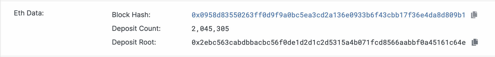
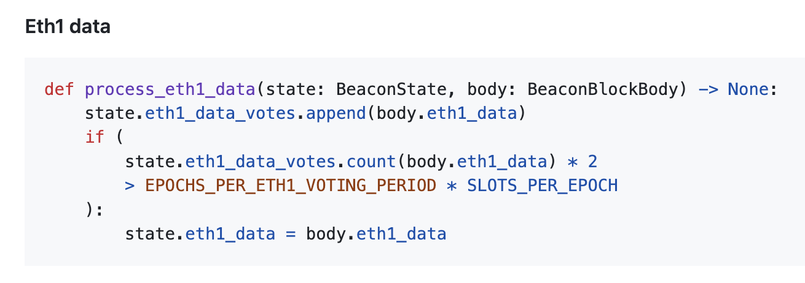

This happened about two years ago. At work, we used Ethereum nodes to build a network. After it went live, we discovered that the network could not add new validators. In other words, the stakers’ 32 ETH deposits were not taking effect.
The reason was that we were using multiple consensus-layer clients, including Prysm and Lighthouse. Why did this suddenly break? Because Prysm has a command-line parameter called --contract-deployment-block. In other clients such as Lighthouse and Teku, the default value for this parameter is 0 (the name may differ across clients, but the meaning is similar). In Prysm, however, the default value is 11184524, which is the block height at which Ethereum’s staking mechanism became active after the network transitioned from PoW to PoS.
What does this parameter do? Starting from the block height configured by this parameter, the client scans the Deposit Contract (on mainnet, it is 0x00000000219ab540356cbb839cbe05303d7705fa) for deposit records from stakers. When we say someone stakes 32 ETH, that simply means they deposit 32 ETH into this contract, or more directly, they transfer 32 ETH to this contract. After the contract receives your ETH, a consensus client such as Prysm can determine from the contract records that a given address really did transfer 32 ETH to the contract, and therefore recognizes that party as a block-producing validator.
Ethereum may have thousands of nodes across the whole network, and every one of them performs the same operation: scanning the Deposit Contract for the validator list and maintaining that data in its own local database state. Then, when it is that node’s turn to propose a block, it takes the validator list it has been maintaining, calculates a total Deposit Count and Deposit Root, uses them as the value of the eth1_data field, and submits that in the block data:

This screenshot is from Ethereum mainnet block 24374562, which means Ethereum currently has 2.04 million validators. It is important to note that validators are not the same as the number of physical nodes running on servers. A single node can run thousands of validators, so the actual number of physical nodes on Ethereum is probably only in the low thousands.
Back to the Prysm configuration issue: if you do not configure --contract-deployment-block, the default value is 11184524. For a newly started chain (one whose Chain ID is not 1), Prysm will not scan staking records in the Deposit Contract before block 11184524. That means its local database contains no validator data, and naturally it will not include eth1_data when producing blocks.
Ethereum’s protocol design requires that eth1_data must match on more than half of the nodes before it takes effect. Note that the ratio here is 1/2, which is different from the magical 2/3 ratio used elsewhere.

So if more than half of the nodes in your newly launched network are using Prysm, and those Prysm nodes do not set the --contract-deployment-block parameter, the network will malfunction and will not be able to process newly joined staking nodes correctly.
We generally assume that a piece of software’s default parameters are relatively safe and reliable, and that explicit configuration only indicates a special requirement. But in the context of the Ethereum Prysm client, failing to override the default value is actually the dangerous choice.